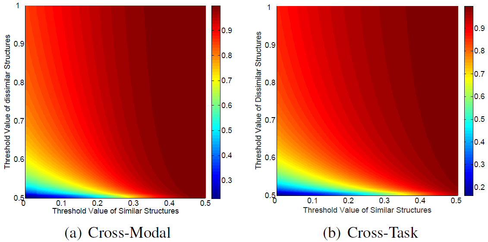
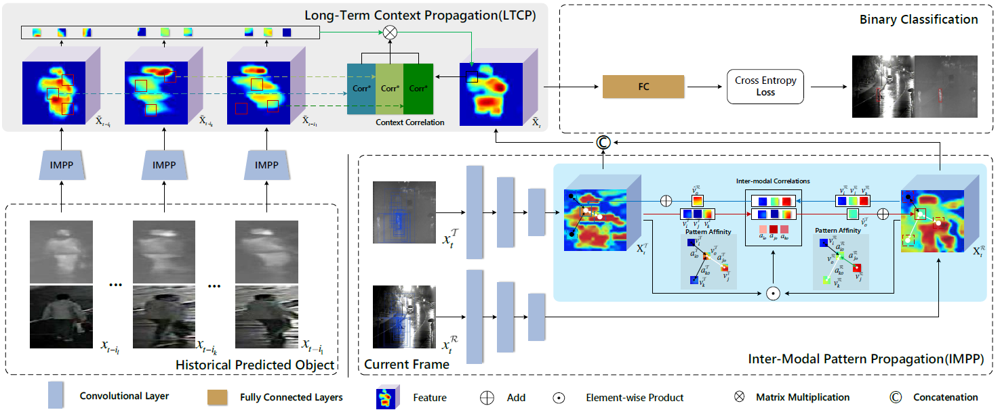
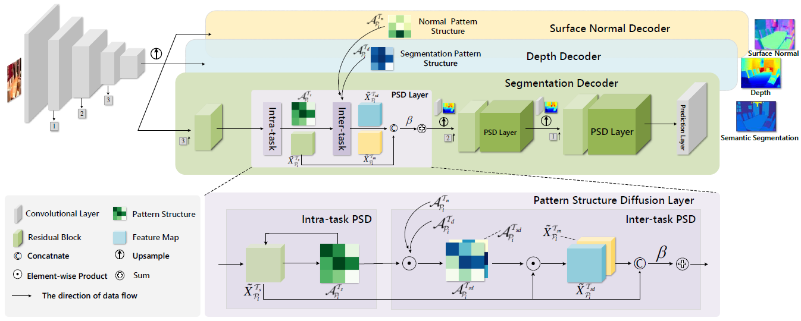

Chaoqun WangPh.D. Student
School of Science and Engineering
|
|


Biography [CV]
I am currently a first year Ph.D student in the School of Science and Engineering, The Chinese University of Hong Kong, Shenzhen, supervised by Prof. Ruimao Zhang and Prof. Tianwei Yu. Previously, I received the M.S degree from VGG under the supervision of Prof. Zhen Cui and Prof. Chunyan Xu in Nanjing University of Science and Technology in 2021, and B.E degree in Huazhong University of Science and Technology in 2016.
My interests include computer vision, deep learning, and multi-modalities including RGB+T, visual+language.
News
- [03/2022] One paper submits to ECCV2022!
- [03/2022] One paper accepts by TPAMI!
- [07/2021] I received the Ph.D. offer from CUHK-Shenzhen, and am going to pursue the Ph.D. degree since August 2021.
- [03/2020] Two papers accept by CVPR 2020!.
Selected Publications [Google Scholar]
|  | Visual Micro-Pattern Propagation Zhen Cui, Ling Zhou, Chaoqun Wang, Chunyan Xu, and Jian Yang. Transactions on Pattern Analysis and Machine Intelligence(TPAMI), 2022. |
|  | Cross-Modal Pattern-Propagation for RGB-T Tracking Chaoqun Wang, Chunyan Xu*, Zhen Cui*, Ling Zhou, Tong Zhang, Xiaoya Zhang, Jian Yang. Conference on Computer Vision and Pattern Recognition(CVPR), 2020. |
|  | Pattern-Structure Diffusion for Multi-Task Learning Ling Zhou, Zhen Cui*, Chunyan Xu, Zhenyu Zhang, Chaoqun Wang, Tong Zhang, Jian Yang. Conference on Computer Vision and Pattern Recognition(CVPR), 2020. |
Honors & Awards
-
Outstanding Graduate Student (top 1%), NJUST, Nov. 2020 -
National Scholarship (top 1%), NJUST, Oct. 2020 -
The First Prize Scholarship (top 10%), NJUST, Oct. 2020
© Chaoqun Wang | Last updated: Apr 2022